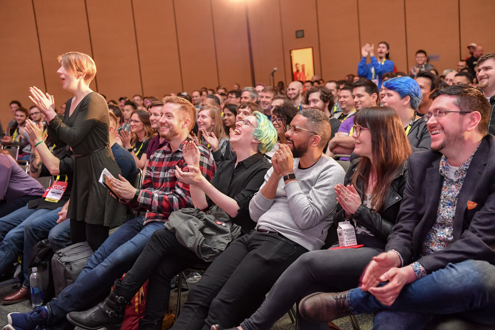

GDC Conference 2019!
Some informations about GDC Conference
Originally called the Computer Game Developers Conference, the first conference was organized in April 1988 by Chris Crawford in his San Jose, California-area living room.[1] About twenty-seven designers attended, including Don Daglow, Brenda Laurel, Brian Moriarty, Gordon Walton, Tim Brengle, Cliff Johnson, Dave Menconi, and Carol and Ivan Manley. The second conference, held that same year at a Holiday Inn at Milpitas, attracted about 125 developers. Early conference directors included Brenda Laurel, Tim Brengle, Sara Reeder, Dave Menconi, Jeff Johannigman, Stephen Friedman, Chris Crawford, and Stephanie Barrett. Later directors include John Powers, Nicky Robinson, Anne Westfall, Susan Lee-Merrow, and Ernest W. Adams. In the early years the conference changed venue each year to accommodate its increases in size. Attendance in this period grew from 525 to 2,387. By 1994 the CGDC could afford to sponsor the creation of the Computer Game Developers Association with Adams as its founding director. Miller Freeman, Inc. took on the running of the conference in 1996, nearly doubling attendance to 4,000 that year.[2] In 2005, the GDC moved to the new Moscone Center West, in the heart of San Francisco's SOMA district, and reported over 12,000 attendees. The GDC returned to San Jose in 2006, reporting over 12,500 attendees, and moved to San Francisco in 2007 – where the organizers expect it will stay for the foreseeable future. Attendance figures continued to rise in following years, with 18,000 attendees in the 2008 event.[3] The 2009 Game Developers Conference was held in San Francisco, on March 23–27, 2009.[4] The IGDA awarded 25 scholarships to send qualified students to attend the 2009 GDC.